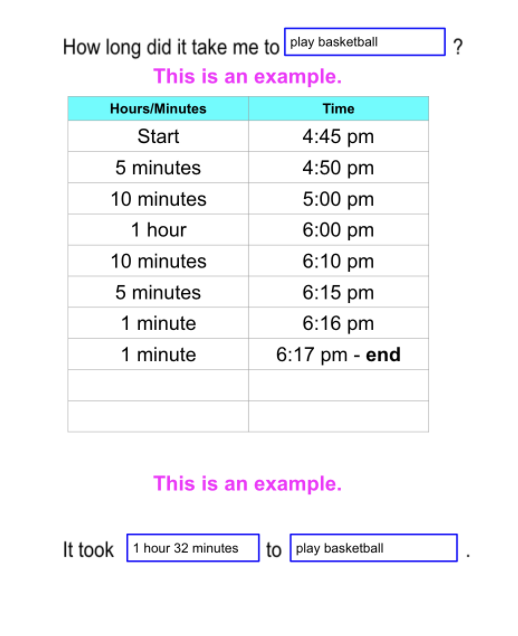

Extend Yourself - Vernier Science: Cup Design Time Challenge
 Best Cup Challenge Bonus
Best Cup Challenge Bonus
- Repeat your experiment with the coldest water you can get from the faucet and see how well your cup does to keep the water cold. Use the t-chart to track the time and temperatures. How do the results compare to your hot water experiment? Do you think insulators work the same when keeping things cold as hot?
- Test an insulated cup from a store and see how it compares to your design.
- Explore more temperature experiments using the Go!Temp sensor.
- Create a video or print ad for your insulated cup that makes people want to buy it.
Research Online
- What is a vacuum flask and how does it work? Go online and find out.
- We often think of snow as something that makes us cold, meaning it takes heat away from our body. But many animals actually use it as a very strong insulator to stay warm. It can even be used by humans as a survival tool in cold climates. Research how snow can be used as an insulator.
Vernier Go!Temp
- Ask your Facilitator for other Vernier Go!Temp sensor activities. Or create your own experiment.
- Create a tutorial to help other students use Vernier Go!Temp sensor or Logger Lite software.
- Check out some of the activities using other Vernier sensors.
My Favorite Activities - How Much Time?
It is helpful to know how long it will take you to do certain activities. We need to know when to get up in the morning so we have time to take a shower, brush our teeth, get dressed, and eat breakfast. We can time different activities to help us plan better.
-
Select an activity or series of related activities. The activity should last longer than an hour but not more than eight hours (example: getting ready in the morning).
-
The next time you do the activity, look at a clock or a watch and write down the start time.
-
At the end of the activity, use a clock or a watch to check the time. Write down the end time. You will need this information during the challenge.
-
Open the My Favorite Activity T-Chart Template.
-
Go to slide 2. Slide 1 is an example.
-
Use the start time and end time from the activity that you timed yourself completing.
-
Complete the fill-in-the blank at the top of the template.
-
Fill in the start time.
-
Fill in the hours/minutes column.
-
Complete the time column. Stop when you get to your end time.
-
Add up all of the hours and minutes in the hours/minutes column. The total is the elapsed time.
-
Complete the two fill-in-the blanks at the bottom of the Template.
See the example of a completed template.

What Time Is 9:62?
In this Cyberchase clip, Digit calculates that he has to take his cake out of the oven at 9:62. What time do you think he means? Why? What mistake did he make? Write down your thoughts and then watch the video to see what you learn.